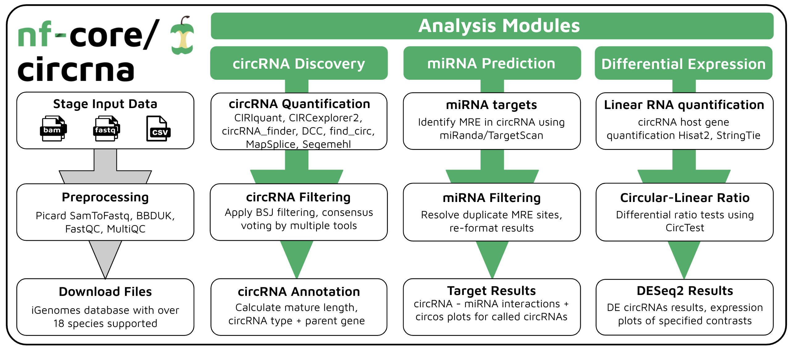
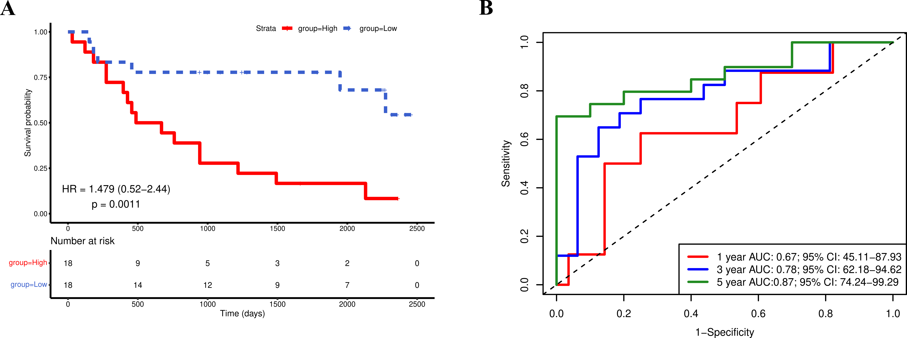

PhD in Genomics Data Science
Computational approaches to the analysis of circular RNAs
Bioinformatic tool development and applications in understanding drug-resistant prostate cancer
The pitch
Can circular RNAs predict which prostate cancers will come back?
Answering that reproducibly meant fixing the tooling first. The thesis does both.
Act I · The problem · Ch 2
Five popular circRNA tools, five different answers
Tools disagree
unique circRNAs were called by all five popular tools (Hansen et al., 2016, reviewed in Ch 2). Each approach has its own blind spots and false-positive profile.
Names disagree
One circRNA, chr1:27087346-27089776|+ (hg19):
- ArraystarASCRP3003018
- circAtlashsa-ARID1A_0002
- circBankhsa_ARID1A_0003300
- circBasehsa_circ_0006913
Act II · Build · Ch 3
nf-core/circrna: one command, three analysis modules

Act II · Build · Ch 3
Consensus beats every single tool
- Six of seven tools are precise (≥97%); sensitivity ranges 63–92%.
- Requiring ≥2 tools to agree gives 99.8% precision, 96.1% sensitivity.
- Sweet spot: 3 tools, agreement of 2 (F1 97.8%); more tools add cost, not accuracy.
- DCC (STAR 2-pass) adds false positives: 75.55% precision.
Act III · Apply · Ch 5
Use regulatory biology, not brute force, to choose features
The ceRNA hypothesis predicts how three RNA types move together:
Only triplets whose expression moves as the hypothesis predicts survive, in both prostate tumours and enzalutamide-resistant LNCaP cells.
Act III · Apply · Ch 5
Moderate discrimination, validated and reported honestly

Impact · Ch 6
What this adds up to
Reproducible consensus calling
nf-core/circrna turns a fragmented tool landscape into one containerised, portable workflow with data-driven defaults.
One lookup for nine databases
pycircdb normalises coordinates to 0-based and annotates 300,000 circRNAs in about a minute on a workstation.
A network-derived signature
A 23-gene BCR signature, rigorously validated and largely distinct from published panels.
Next: long-read full-length circRNA workflows · prospective validation · exosomal liquid-biopsy assays